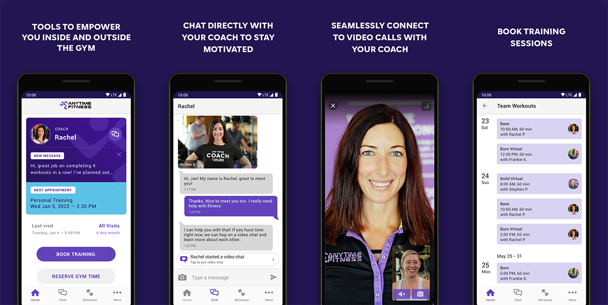
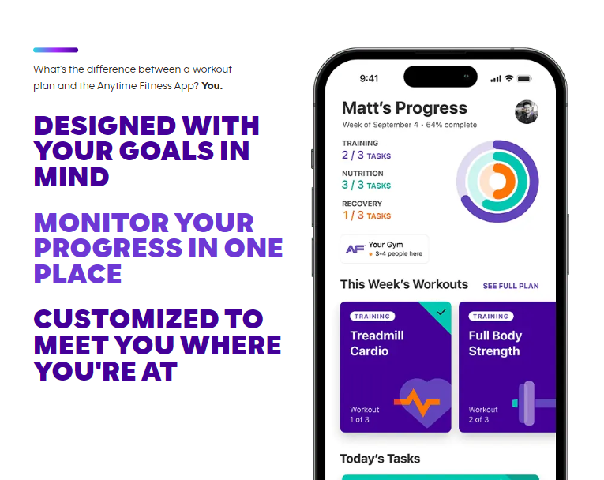
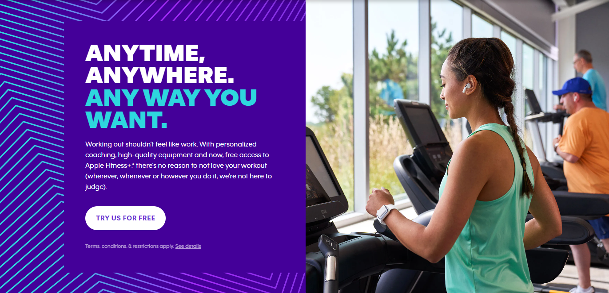
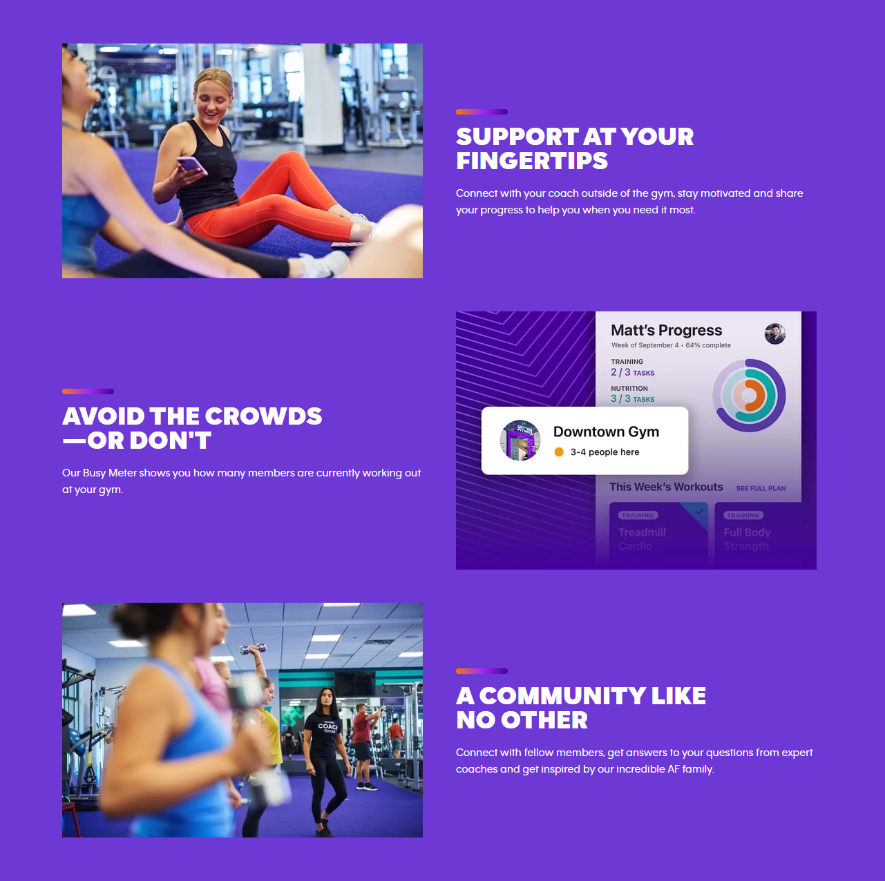

The Anytime Fitness mobile app is a comprehensive fitness tool designed for members of the Anytime Fitness gym chain. It offers a variety of features to enhance the workout experience, including access to workout plans, the ability to track fitness progress, and integration with fitness trackers. Users can also use the app to find Anytime Fitness locations and check club information like amenities and staff hours. The app aims to provide convenience and motivation for users, encouraging them to maintain their fitness routine by making it easy to stay connected and engaged with their fitness goals, even when they're on the go.
During my tenure as a Senior Frontend Developer at Anytime Fitness, I was deeply involved in a broad range of development activities that significantly enhanced the functionality and user experience of the company's digital offerings. My responsibilities included the development of innovative features and the meticulous refactoring of the existing codebase. This effort was pivotal in driving continuous improvements, ensuring that the applications remained cutting-edge and user-friendly. My commitment to adopting new technologies and methodologies played a crucial role in elevating the product's overall quality and appeal.
A key aspect of my role was to ensure the highest standard of code quality and functionality. To achieve this, I regularly performed rigorous unit and end-to-end testing. These practices were vital in delivering robust and high-performing applications, minimizing the occurrence of bugs, and ensuring a seamless user experience. My focus on meticulous testing underscored my commitment to excellence and reliability in application development.
In my pursuit of excellence, I also took on the challenge of optimizing the codebase for better performance and readability. My efforts led to significant reductions in load times and enhancements in the overall user experience. This optimization process was not only about improving the existing code but also about setting a precedent for future development, ensuring that our applications remained agile, efficient, and user-centric.
Furthermore, I was actively involved in conducting regular code reviews, ensuring adherence to the highest coding standards and best practices within the team. My contribution to the development and implementation of agile methodologies, such as SCRUM, greatly improved team productivity and project delivery timelines. I employed a variety of technologies, including React, Typescript, React Testing Library, Bootstrap, Tailwind, Playwright, Figma, and Jira, to achieve these goals. My time at Anytime Fitness was marked by a continuous pursuit of innovation and excellence, contributing significantly to the evolution of our digital products.




- Categories: Website
App - Period: 05/2020 - 04/2023
- Landing Page: anytimefitness.com